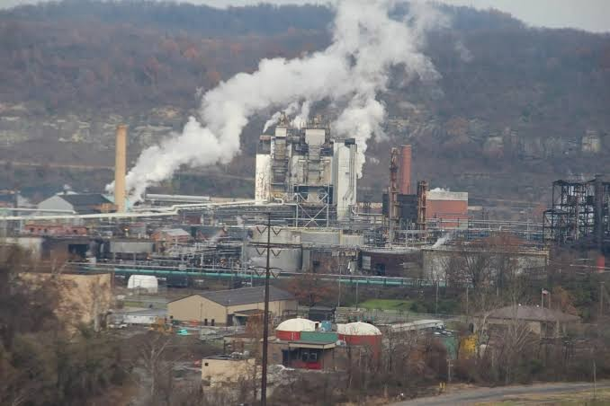
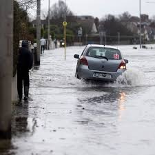
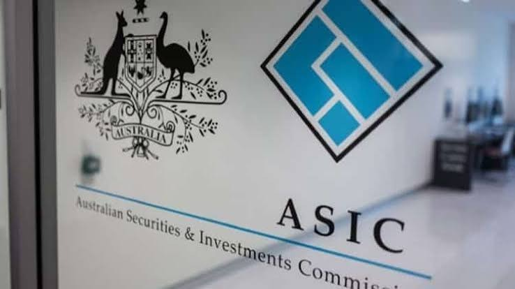

Making sense of the stories that shape the economy.
Breaking Even - bringing you breaking news stories that relate to your studies of economics.
Listen to this month’s edition →Welcome to Breaking Even
Welcome to the Breaking Even web page, an interactive student led economics web page that helps you learn economics through what is happening in our world today.
On this page you will find a monthly bulletin with enthralling news stories that all link to your studies. Accompanying each news podcast is a ‘Key Definitions’ page - which adeptly connects these news stories to your studies, an ‘Interactive Economic Scenario’ page which aids your understand the content, and a ‘Test Your Knowledge’ page to help you hone and progress your knowledge of economics.
The November Edition
The contents of this months edition links with chapters 9, 10, and 18 of Economics (7th edition) by Mankiw and Taylor, incorporating concepts such as Public Goods, Common Resources, Merit Goods, Externalities and Asymmetric Information.
This Month’s Headlines
FIVE STORIES · FIVE CONCEPTSINDONESIAN FOREST FIRES DAMAGING COMMON RESOURCES
Explore the scenario →
STEEL INDUSTRY POLLUTION CAUSING MAJOR HEALTH CONCERNS
Explore the scenario →ARE IRISH SCHOOLCHILDREN FINALLY GETTING FREE SCHOOLBOOKS?
Explore the scenario →
CONCERNS OVER CRITICAL FLOOD PROTECTION IN IRELAND
Explore the scenario →
AUSTRALIAN REGULATOR ASIC UNCOVERS A FAILING IN THE PRIVATE CREDIT MARKET
Explore the scenario →Happy Listening!!